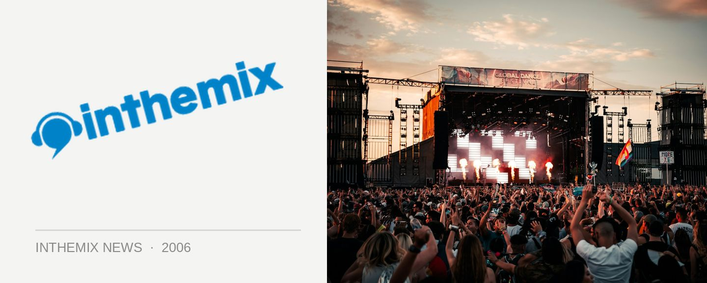

Set times released for Field Day
As 2007 quickly approaches, Fuzzy have already released the set times for their seminal New Years Day event and given punters the chance to plan out their day. Music fans worried about a repeat of last year’s extreme weather conditions and planning on getting there a little later in the day may want to reconsider, with a number of big-ticket acts like Hybrid, Crazy Penis, Mylo and DJ T all scheduled to hit the stage before 5pm.
Field Day set times:
Domain Concert Stage:
11.00am – 12.00pm: John Devecchis
12.00pm – 1:30pm: Grant Smillie
1:30pm – 3.00pm: Lamanex – Illya & Toby Neal
3.00pm – 4.00pm: Crazy Penis (live)
4.00pm – 5.30pm: Mylo (DJ set)
5:30pm – 7:00pm: Kaskade
7.00pm – 8.00pm: Jonathon Wall & Tim Sea
8:00pm – 9:00pm: The presets (live)
9:00pm – 11:00pm: Martin Solveig
Fuzzy Breaks Stage:
11:00am – 12:00pm: Hook n Sling
12:00pm – 1:00pm: Funktrust DJs
1:00pm – 2:00pm: Hybrid (live)
2:00pm – 3:15pm: The Nextmen feat. Dynamite MC
3:15pm – 4:15pm: James Taylor
4:15pm – 5:15pm: Ugly Duckling (live)
5:15pm – 6:15pm: Kid Kenobi & MC Shureshock
6:15pm – 7:45pm: The Loose Cannons (DJ set)
7:45pm – 9:00pm: Freestylers (live)
9:00pm – 10:30pm: Plump DJs
Killer Stage
12:00pm – 1:00pm: Matt Aubusson & Dave Choe
1:00pm – 2:00pm: Mark Murphy
2:00pm – 3:30pm: Tom Neville
3:30pm – 5:00pm: DJ T
5:00pm – 6:30pm: Jaime Doom & Gus Da Hoodrat
6:30pm – 8:00pm: Ajax
8:00pm – 9:00pm: Jaime Lidell (live)
9:00pm – 10:30pm: Switch